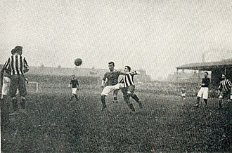

Arsenal Football Club est un club anglais de football fondé le 1er décembre 1886 à Londres. Son siège est situé dans le borough londonien d'Islington, au nord de la capitale britannique. Arsenal participe au championnat d'Angleterre de football depuis 1919 dont il a remporté treize éditions, ce qui en fait le troisième club le plus titré d'Angleterre, ainsi que quatorze coupes d'Angleterre ce qui constitue un record (devant Manchester United, qui en a remporté 12). Sur le plan continental, les Gunners en français : « les canonniers » comptent à leur palmarès une Coupe d'Europe des vainqueurs de coupe obtenue en 1994. Deux fois finalistes de cette coupe des vainqueurs de coupe en 1980 et 1995, ils ont également atteint les finales de la coupe de l'UEFA en 2000, de la Ligue des champions en 2006 et de la Ligue Europa en 2019. Résident dès 1913 du stade de Highbury, situé dans un quartier du nord de Londres, le club s’est installé en 2006 dans une nouvelle enceinte de 60 355 places : l'Emirates Stadium, situé à Ashburton Grove. Arsenal nourrit une certaine rivalité avec les nombreux autres clubs de la capitale, mais celle l'opposant à Tottenham Hotspur, avec qui il dispute chaque année le « North London derby » est particulièrement ancienne et profonde. Jusqu'en mai 2020, le club était dirigé par Chips Keswick (en) qui succède pour raisons de santé en juin 2013 à Peter Hill-Wood, fils et petit-fils des anciens présidents Denis et Samuel Hill-Wood. Il remplace son père à la mort de ce dernier, en 1982, après vingt ans de responsabilités. L'entraîneur actuel est l'ancien capitaine du club, Mikel Arteta depuis décembre 2019.
Arsenal est fondé sous le nom de Dial Square FC en 1863 par des ouvriers de la manufacture d'armes Royal Arsenal, située à Woolwich, à l'Est de Londres sur la Tamise. Rebaptisé Royal Arsenal peu de temps après4, le club adopte l'appellation Woolwich Arsenal lorsqu'il prend forme d'une Limited company en 1891. Les Gunners débutent en Football League Second Division, dont ils sont le premier club du sud du pays, en 1893. Ils évoluent alors au Manor Ground de Plumstead. Quand ils sont promus en Football League First Division en 1904, il n'y a toujours pas d'autre club de la région de Londres en Football League. Cet isolement géographique handicape le club, qui connait des problèmes financiers en raison des faibles affluences lors des matchs joués à domicile.
 En 1910, malgré la promotion de Tottenham et Chelsea dans l'élite, le club est proche de la faillite quand les hommes d'affaires Henry Norris et William Hall le rachètent5. Norris est bien conscient des problèmes dus à la localisation de Woolwich Arsenal et désire augmenter le revenu du club. Il essaie tout d'abord de fusionner Arsenal avec son autre club, Fulham. Cette tentative étant bloquée par la Football League, Norris abandonne l'idée de fusion et considère un déménagement pur et simple. En 1913, alors que le club finit dernier et est relégué en deuxième division, Woolwich Arsenal déménage du sud-est de Londres pour Highbury, au nord de la ville. Malgré les objections des supporters qui habitent Woolwich et celles des résidents de Highbury, Norris tient bon et le changement est effectué. Il en aurait coûté 125 000 livres anglaises (une somme énorme pour l'époque) pour construire le nouveau stade, conçu par Archibald Leitch.
Cinquième de Second Division en 1915, à la veille d'une interruption de quatre ans due à la Première Guerre mondiale, le club adopte le nom de "The Arsenal", après avoir supprimé Woolwich de leur nom en 1914 et bénéficie de l'élargissement à 22 clubs de la première division en 1919 pour y être promu dans des circonstances qui font polémique6. La promotion du club paraissait peu défendable sur le plan purement sportif7, si ce n'est les saisons passées par le club londonien dans l'élite, et semble être due en partie à l'influence de son président Norris7,note 2. En effet, Norris avait argumenté qu'Arsenal devait être promu "pour services rendus au football de ligue", ayant été le premier club du sud à intégrer la Football League[4]. Celle-ci est d'accord avec cet argument, et par 18 votes contre 8 elle décide la promotion d'Arsenal, au lieu du maintien de Tottenham, ce qui est la source de l'animosité entre les deux clubs, qui s'est perpétuée jusqu'à aujourd'hui. Des arrangements auraient eu lieu, on évoque même la corruption de certains membres par Sir Henry Norris, par exemple son grand ami John McKenna, le président de Liverpool et de la Football League[5]. Aucune preuve tangible n'a jamais été apportée, cependant d'autres aspects des tractations financières de Norris, sans rapport avec la promotion de Arsenal, ont nourri les soupçons. Arsenal est resté en première division depuis cette époque, et détient d'ailleurs le record de longévité en première division sans interruption.